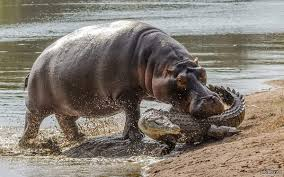
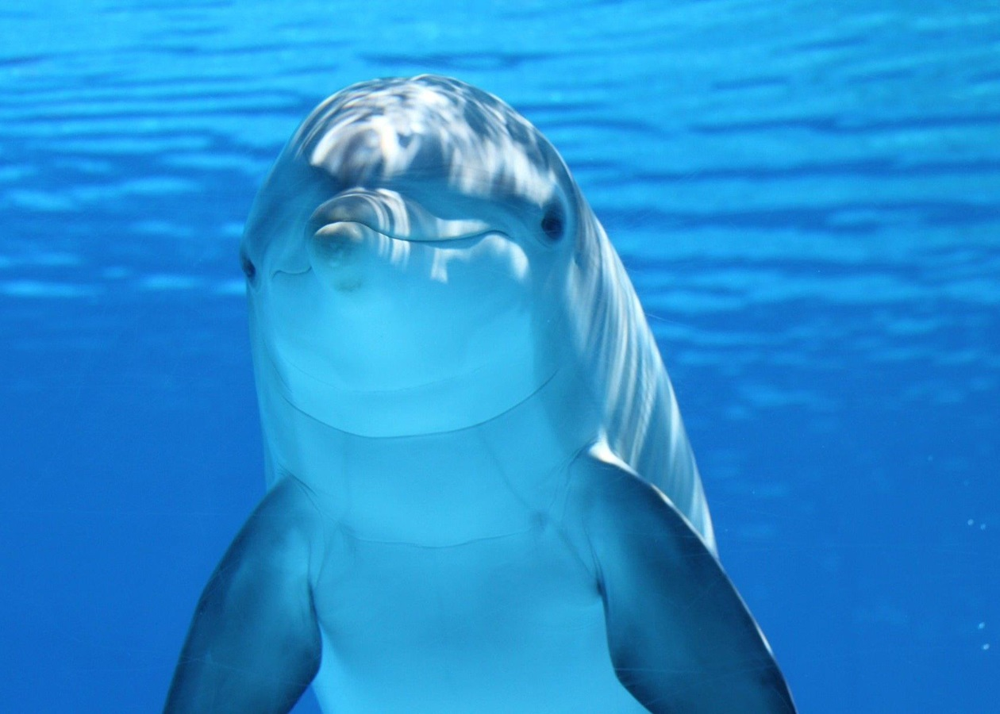

Ласкаво просимо! Тут ти знайдеш цікаві факти про дивовижних тварин з усього світу.";
велика травоїдна тварина, одна з найбільших на суходолі після слонів і носорогів. Він має масивне тіло бочкоподібної форми, короткі товсті ноги й величезну голову з широкою пащею, яка може розкриватися майже на 150 градусів. Шкіра бегемота сірувато-коричнева, дуже товста та майже без шерсті. Більшу частину дня бегемоти проводять у воді - річках, озерах чи болотах, де охолоджують тіло й захищаються від сонця. Увечері вони виходять на сушу, щоб пастися, переважно поїдаючи траву. Хоч бегемоти здаються мирними, вони можуть бути дуже небезпечними - швидко рухаються та активно захищають свою територію.

Дельфіни можуть розпізнавати себе у дзеркалі — це ознака високого рівня інтелекту.
